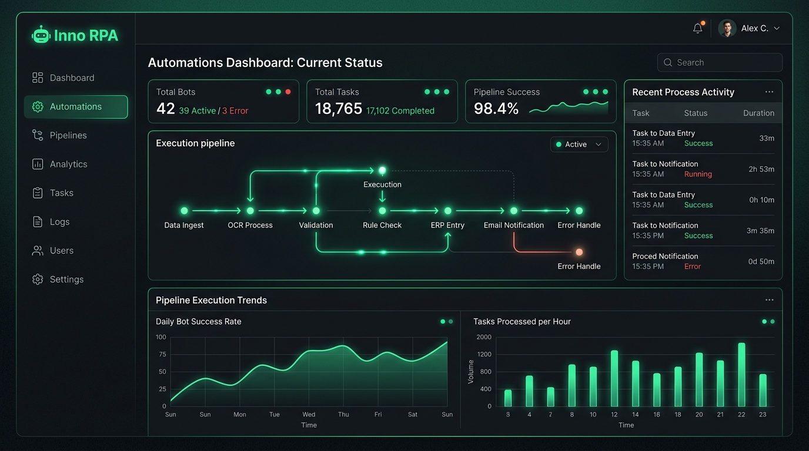
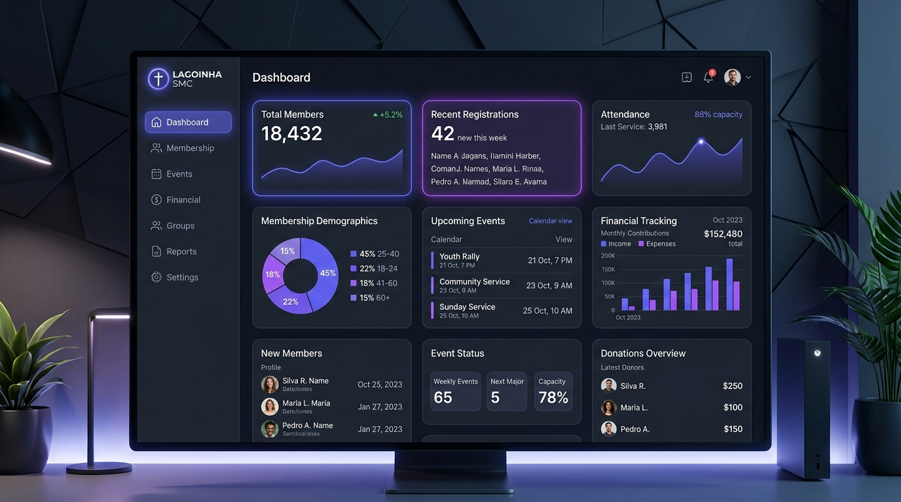
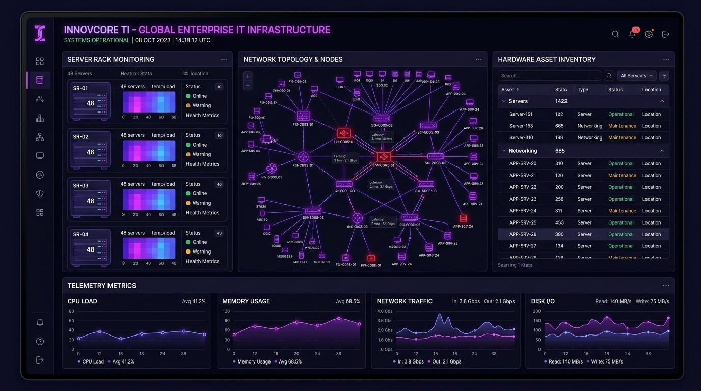
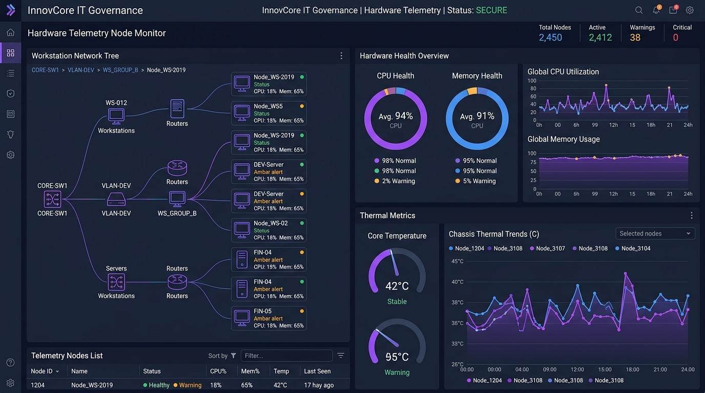

S
o
f
t
w
a
r
e
A
r
c
h
i
t
e
c
t
Open to work
Based in Brazil
Selected Works

Motor Robótico Zero-Leak
Motor robótico em C puro com C# WPF e visão computacional Vision7 para execução contínua de 72h.

Mapeamento de Coordenadas
Módulo de inteligência visual para mapeamento de telas gráficas legadas com latência de 12ms.

Núcleo em Pure C
Gerenciamento de memória raw pointers e alocação dinâmica com consumo menor que 14MB de RAM.

Plataforma PWA Cloud
Sistema de controle de estoque com sincronização Firebase e leitor de QR Code.

Leitor QR via Câmera
Digitalização instantânea de patrimônio e geração de termos de responsabilidade.

Sincronização em Tempo Real
Atualizações instantâneas de saldo de estoque via Firebase WebSocket.

Ecossistema Web CRM
Plataforma web escalável em Next.js 14 para gestão de membros e controle financeiro.

Painel de Membros & RBAC
Controle de acesso baseado em funções e métricas de engajamento de líderes.
Emissão de PDFs Automatizada
Geração dinâmica de balancetes e relatórios departamentais com PDFKit.

Governança de TI Enterprise
Monitoramento e auditoria em tempo real de ativos de TI com sensores WMI.

Nós de Telemetria de Hardware
Monitoramento contínuo de temperatura, CPU, RAM e ciclo de vida de ativos.

PROJETOS INNOV
Monorepo unificado orquestrando microsserviços, Design System e CI/CD.
Painel de Membros & RBAC
Controle de acesso baseado em funções e métricas de engajamento de líderes.
Emissão de PDFs Automatizada
Geração dinâmica de balancetes e relatórios departamentais com PDFKit.
Governança de TI Enterprise
Monitoramento e auditoria em tempo real de ativos de TI com sensores WMI.
Nós de Telemetria de Hardware
Monitoramento contínuo de temperatura, CPU, RAM e ciclo de vida de ativos.
PROJETOS INNOV
Monorepo unificado orquestrando microsserviços, Design System e CI/CD.